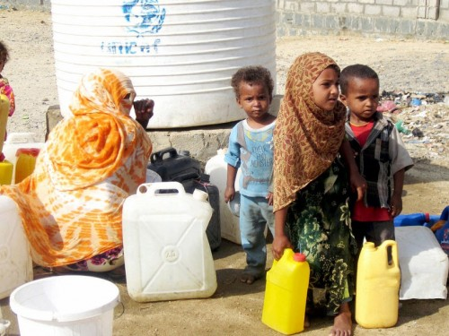

Interview: Yemen
27 Sep 2012

Scarce water resources threaten the health of the population, particularly children. Lack of water supplies disrupts education, particularly for young girls, who are forced out of schools to make long journeys to fetch water. Credit: Yemen Humanitarian Communication Network
Deal with the humanitarian crisis or the country’s stability will remain in jeopardy, warns Humanitarian Coordinator Ismail Ould Cheikh Ahmed.
One million Yemeni children are acutely malnourished. Hundreds of thousands of people displaced by conflict are living in temporary shelters and public buildings. The political crisis and armed conflict have led to a breakdown in public services, leaving more than 5 million people without access to basic health care; about half the population does not have access to clean water.
UN agencies and humanitarian partners are working to meet the basic needs of Yemenis and hundreds of thousands of refugees in the country, but insecurity and lack of funding are affecting their work. The humanitarian appeal for US$584 million is less than 50 per cent funded. At a meeting in Saudi Arabia earlier this month, international and regional donors pledged $6.4 billion to support the Government’s transitional plan, but it is still unclear how much of this money would go towards life-saving humanitarian assistance.
On the margins of the Friends of Yemen meeting in New York today (27 September), Humanitarian Coordinator Ismail Ould Cheikh Ahmed talks about the need to respond to the humanitarian crisis and promote stability in parallel with Yemen’s ongoing political transition.
Q. Is Yemen becoming a forgotten crisis as people’s attention turns to Syria?
We really believe that somehow the world hasn’t grasped the magnitude of the crisis in Yemen. People often think of Yemen as a political transition where there has been good progress, but what people have been forgetting is that today over 10 million Yemenis wake up in the morning without knowing if they can get food for the day. Out of the 10 million, 5 million are in severe need of food assistance. One million children suffer from acute malnutrition. About 270,000 children have serious acute malnutrition, which could jeopardize their lives or impair their growth. For the first time, we have seen 170 cases of death by measles this year after many, many years. We have also seen some resurrection of polio.
We have close to half a million internally displaced people, both in the north and south. The conflict in Abyan (southern Yemen) is exacerbating the displacement. In addition, there are close to 300,000 refugees in the country. Yemen has never stopped receiving migrants and refugees. Even at the peak of the crisis in Yemen in 2011, it received over 100,000 people.
The humanitarian community is trying to get the attention of the world. We have appealed for more than $580 million but we have only received 49 per cent of that. That’s why we are hoping that the Friends of Yemen meeting will help shed more light on the situation. I hope that people at the meeting will take this opportunity to highlight that the real stabilizing factor for Yemen would be to deal with the humanitarian crisis. If we don’t deal with the humanitarian crisis, stability will remain in jeopardy.
Q. What are your expectations for the Friends of Yemen meeting today ?
We had the Riyadh meeting recently, where the international community showed its strong support and committed $6.4 billion in pledges to the Government of Yemen. This is a strong message and many of the supporters spoke about the humanitarian crisis. But we don’t know yet how much of the money would go the humanitarian crisis, and we need that to materialize soon. We still need about $300 million in humanitarian funding for 2012. We are in the process of preparing the appeal for 2013 because we know that there is a major crisis.
Humanitarian concerns such as malnutrition are a major destabilizing factor in Yemen, so it is very difficult to support the political transition when almost half of the population is living in poverty. About 55 per cent of the youth who graduate from universities cannot find any jobs. These are the real problems of today and the real destabilizing factors. I believe that the political transition should go on, but we cannot wait for elections to take place before we deal with the humanitarian and development problems; all these issues have to be dealt with in parallel.
We have big hopes this time that donors will give us concrete answers on whether they will cover the funding gap and give additional funds to the OCHA Emergency Response Fund, which also provides funding to NGOs. It is important that the capacity of the Yemeni NGOs is strengthened. Their work across the country, even in remote areas, reaching out to communities, could really transform reality and stabilize the country.
Q. So far, only 49 per cent of the $584 million needed for humanitarian assistance has been received. Important sectors, such health and sanitation, are severely underfunded. What is the impact of this?
My message to donors is that having a discrepancy in the humanitarian appeal is as risky as not having any funding at all, because you create an imbalance that is very unhealthy for any community.
For instance, malnutrition is a very major problem in Yemen today. If I could make a particular issue the focus of the humanitarian community for the next five years, it would be malnutrition. But malnutrition is not only about food – we can provide food and the sector is quite well funded. But the limited funding for water and sanitation could also affect malnutrition because waterborne diseases cause diarrhoea, so it is also about having access to clean water. It is also about education: when educated girls become mothers, they are able to give better nutrition to their children. And it is also about awareness. Malnutrition requires a multifaceted intervention and needs to be addressed in various ways.
We also want to make sure that we don’t have a population that depends on assistance forever, because that is not a solution. We need to help people reconstruct their lives and give them opportunities to have an income that can then help them get out of being dependent. But this can only happen if the international community realizes the importance of fully supporting the people of Yemen.
More>> Humanitarian Situation in Yemen (Source: Reliefweb) - Yemen Humanitarian Crisis (Arab Humanitarian Portal) - OCHA Consolidated Appeal Process

{kind=link}